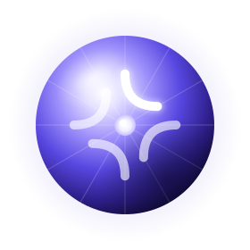
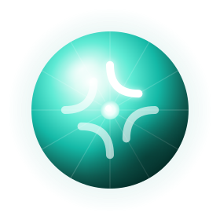
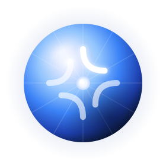
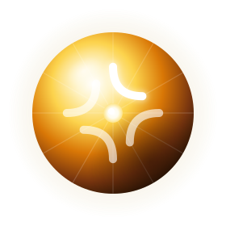

Mismo concepto que la versión anterior (orb con el isotipo Iris) pero con seis capas: halo ambiente, esfera con gradiente extendido, estrías de iris floral, sombra esférica, specular highlight y pétalo primario con glow. La identidad de Iris se mantiene; gana profundidad y presencia.




Seis capas, todas vectoriales (~2 KB). Sin JS. Lista para usar como <img>, inline SVG o como background.